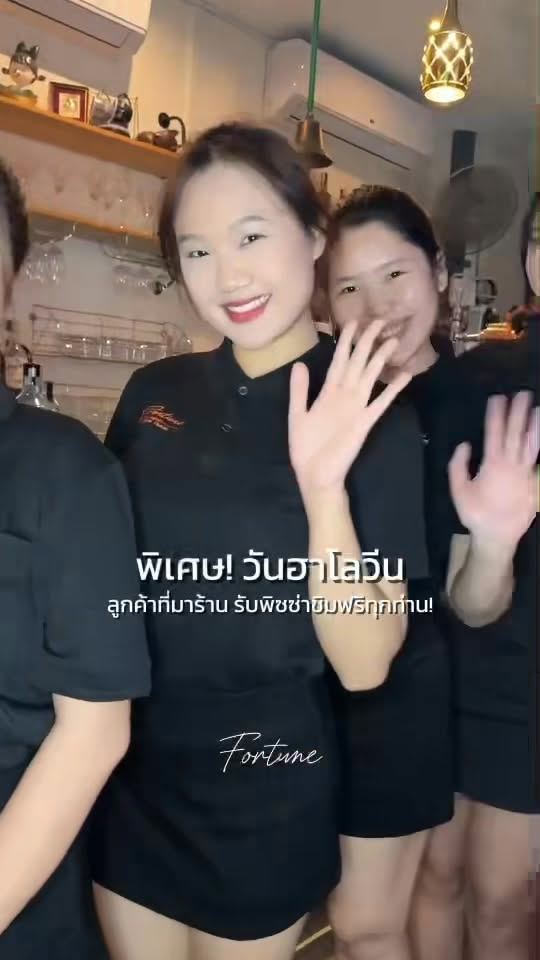
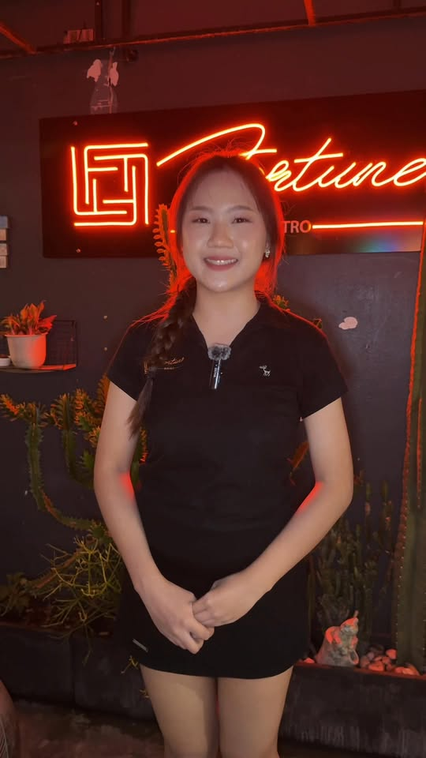
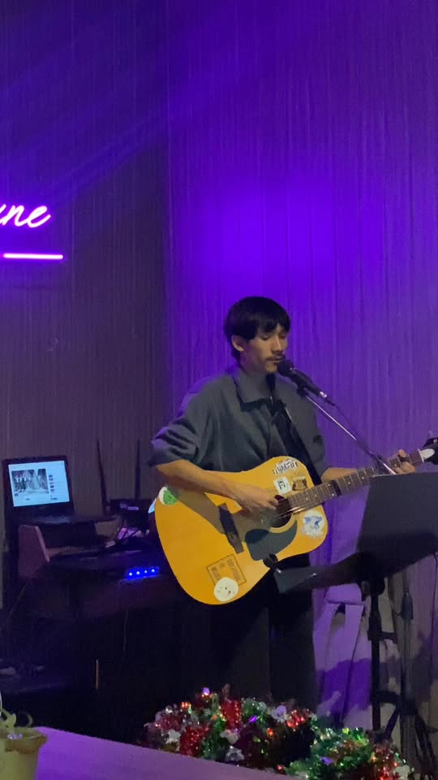
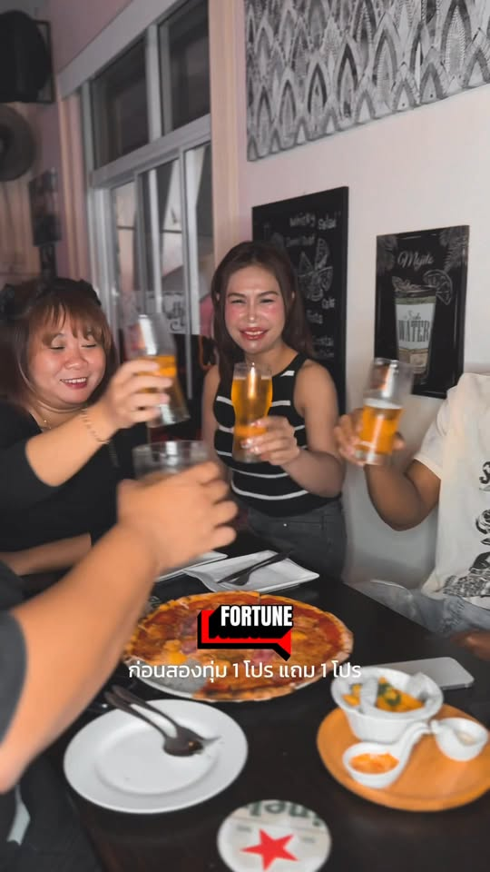

เกี่ยวกับเรา
Our story
About Fortune Bistro
A neighbourhood café-bistro on Prajak Silapakom Road — open early for food, lively for soccer, glowing for live music.

Udon Thani
Not a nightclub. A full-day bistro.
Fortune Bistro starts with food. We open early for breakfast and serve Thai and European café-bistro meals all day — pasta, pizza, steaks, Thai classics, coffee. British-owned, and run as a food business first.
Later the screens fill with soccer and the sports crowd rolls in. Later still, live music and nightlife take over. Same address. Same kitchen. Three chapters in one day.
- Breakfast & all-day dining
- Thai & European kitchen
- Soccer & sports on screens
- Live music after dark
- Outdoor seating
How the day unfolds
Day → evening → night
Lead with the plate. The match and the music come after.
Morning & daytime
Coffee, breakfast, lunch — a calm café-bistro for locals, expats, and travellers. Thai comfort food and European favourites under one roof.
Later afternoon & evening
Soccer on the screens. Pizza, cold beer, and friends at the table while the match plays. Easy sports-bar energy without losing the bistro feel.
Later night
Neon on, performers on stage, drinks and a proper night out. Follow Facebook for who’s playing.
The feel
Friendly floor, warm neon
We’re known for a welcoming team, outdoor seating when you want air, and an easy vibe that works from morning coffee to a late set.
Follow us on Facebook for match days, music nights, and kitchen specials — or just walk in on ถนนประจักษ์ศิลปาคม.

People
Glad you’re here
Our team is happy to help with recommendations, table needs, and what’s on the screens or the stage tonight.


Come say hello
Call us or see Visit for the map and hours guidance.